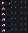
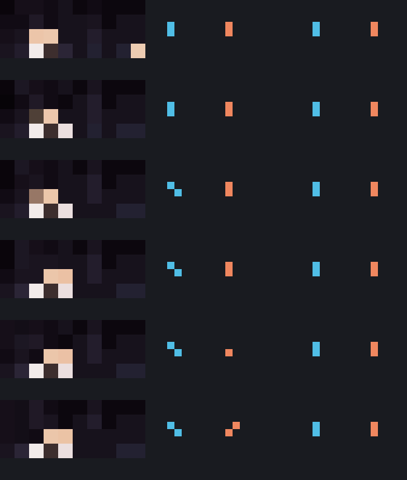
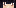

미채택. 제품/Unity 변경0. 진단색 비교이며 후보의 완성 RGB 렌더가 아닙니다.
기존 점수·면적 예산은 유지하고, 등록된 원본 iris가4연결이라는 조건만 추가한 제한 오프라인 후보입니다. 2셀 자체를 버그로 판정하거나 모든 눈을2/4셀로 고정하지 않습니다.
청록=stableId2, 주황=stableId1. 뒤 두 열은 홍채 위치만 보인 진단색이며 흰자·안검·원색을 새로 합성하지 않았습니다.




| frame/stableId | 기존 홍채 | 조건부 후보 | 기존 점수 비용 증가 | 투영 source 중심 거리² | 대체하는 기존 feature |
|---|---|---|---|---|---|
| 98/2 | [[215, 52], [216, 53]] | [[215, 52], [215, 53]] | 0.996971 | 0.108254 → 0.032513 | [6.0] |
| 99/2 | [[215, 52], [216, 53]] | [[215, 52], [215, 53]] | 2.000915 | 0.075212 → 0.053066 | [6.0] |
| 100/2 | [[215, 52], [216, 53]] | [[215, 52], [215, 53]] | 3.000000 | 0.047920 → 0.081059 | [6.0] |
| 100/1 | [[223, 53], [224, 52]] | [[223, 52], [223, 53]] | 1.085489 | 0.058021 → 0.130974 | [1.0] |
| 101/2 | [[215, 52], [216, 53]] | [[215, 52], [215, 53]] | 2.028059 | 0.026770 → 0.116319 | [6.0] |
| 101/1 | [[223, 53], [224, 52]] | [[223, 52], [223, 53]] | 1.067557 | 0.035430 → 0.165937 | [1.0] |
feature6은 일반 피부에서도 생성되는 lower-like 라벨이라 실제 native 안검이라고 확정되지 않았습니다. 그러나 이를 무조건 지워도 된다는 근거도 없습니다. 연결성은6개 분절을 없앴지만 원본 중심 거리4쌍 악화 및 전체 눈 파츠 교체를 해소하지 못했습니다. NativeLine 순위0변경은 전체 눈 보존과 다릅니다.
합성16검사와 동결 입력 재생을 통과했습니다. 작은 점수 변화만으로 연결 클러스터 위치가 바뀌는 반례도 남습니다. 현재73은 한 프레임이며, 과거47의 실제6프레임을 CPU로 다시 계산한 결과를 live GPU/회전/blink 안정화로 주장하지 않습니다. 49의 정수 이동과53의 any(front) 전체 기각을 재사용하지 않았습니다.
다음은 전체 눈 source keyform/안검·흰자·홍채 관계와 기하 이동의 대가를 공동 정의해야 합니다. 현재73의 subsample 역할·가림 및 Template bank 전체가 없고, 과거47 clean backing을 새73으로 메우지 않습니다. 기준 없이 더 많은 가중치나 후보를 추가하지 않습니다.